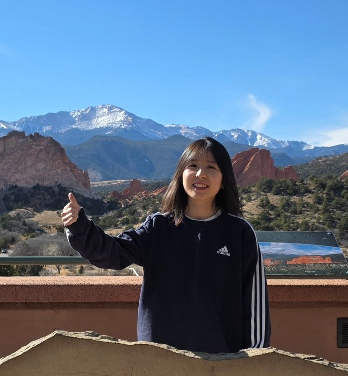

Hello, I'm Eunji
I am a Ph.D. Candidate in the Department of Civil, Urban, Earth, and Environmental Engineering at Ulsan National Institute of Science and Technology (UNIST), where I conduct my doctoral research under the supervision of Professor Dong-Hyun Cha.
My research focuses on tropical cyclones and their associated rainfall over the western North Pacific, with particular interests in subseasonal-to-seasonal prediction, global climate model evaluation, and regional atmospheric modeling. I explore how large-scale environmental conditions influence tropical cyclone activity and how numerical simulations can better represent tropical cyclone rainfall.
Get in touch: hahahh@unist.ac.kr
